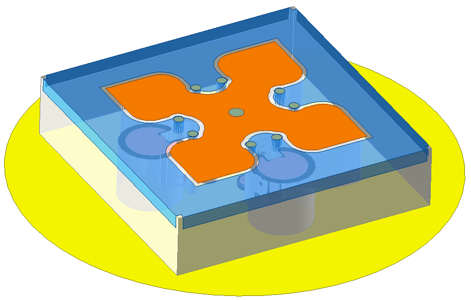
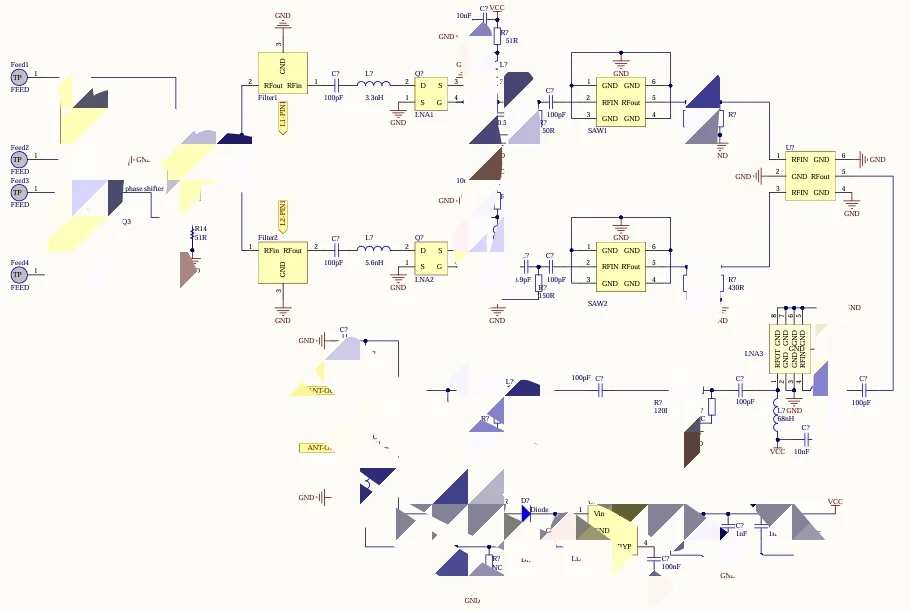
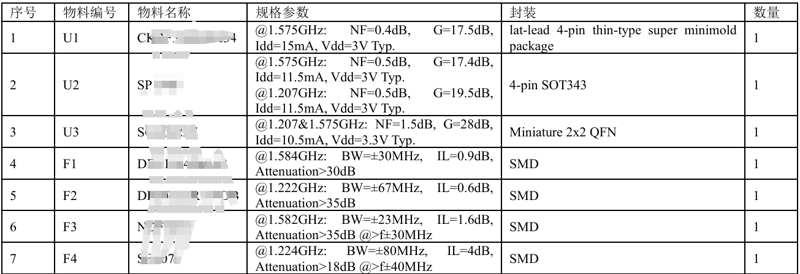

GNSS 天线及有源射频模块
覆盖 BDS B1/B2 与 GPS L1/L5 四个频点的右旋圆极化天线，配合 "独立滤波 — 分级放大 — 合路再放大"架构的有源链路，在 2.5 dB 噪声系数下守住 32 dB 链路增益。
项目概述/ Overview
导航接收的瓶颈几乎从来不是"天线有没有"，而是整条链路的噪声预算。
设计并开发高性能 GNSS 天线及有源射频链路系统，支持多频段卫星导航信号接收。 系统集成了低噪声放大器、滤波器与功率分配网络，实现高精度定位所需的射频指标。
天线端要同时覆盖 BDS B1 (1561 MHz) / B2 (1207 MHz) 与 GPS L1 (1575 MHz) / L5 (1176 MHz) 四个频点，且必须保持右旋圆极化 —— 卫星信号经电离层与地面反射后极化状态会劣化，轴比直接吃掉链路余量。
链路端的关键取舍在于先合路还是先放大。采用"独立滤波 — 分级放大 — 合路再放大"： 每个频点先各自滤波并放大，把噪声系数钉在靠近天线的第一级，再合路做增益， 既避免合路后滤波造成的噪声恶化，又保住带内平坦度。
技术规格/ Specifications
天线与有源链路的交付指标。
- 覆盖频段
- BDS B1 / B2 · GPS L1 / L51561 / 1207 / 1575 / 1176 MHz
- 极化方式
- 右旋圆极化 (RHCP)
- 轴比
- < 3 dB
- 天线增益
- 3 – 5 dBi
- 外形尺寸
- 55 × 55 × 13 mm
- 链路增益
- > 32 ± 3 dB
- 噪声系数
- < 2.5 dB
- 带内平坦度
- ± 1 dB
- 带外衰减
- > 25 dBf ± 50 MHz
- 1 dB 压缩点
- > 3 dBm
技术方案/ Approach
五个决定指标的点，逐个可复述。
- 多频段共用一套辐射体 —— 用同一结构同时激励 B1/B2 与 L1/L5，避免四副天线在 55 mm 口径内互扰。
- 宽带圆极化技术 —— 以馈电结构与辐射贴片的几何关系压轴比，把极化劣化控制在 3 dB 以内。
- 低噪声射频前端 —— 第一级 LNA 就近天线布置，噪声系数由首级主导，后续各级只需守住线性度。
- 独立滤波 + 分级放大 + 合路再放大 —— 带外抑制做到 > 25 dB（f ± 50 MHz），同时带内起伏 ± 1 dB。
- 抗干扰与集成化 —— 单模块内完成滤波、放大、合路与匹配，输出直连后级接收机，简化整机布局。
项目图档/ Figures
点击放大，滚轮缩放、拖拽平移，方向键翻页。



FIG 01
项目成果/ Outcomes
指标即验收条件。
单一天线结构覆盖 BDS B1/B2 与 GPS L1/L5。
噪声系数控制在首级，链路整体 > 32 ± 3 dB。
圆极化轴比守住卫星信号经反射后的链路余量。
f ± 50 MHz 带外衰减，同时带内平坦度 ± 1 dB。
关联：研究方向 02 · 射频工程 · 工作经历